From a 2x4 (or other applicable formations) with precisely two dancers in each 1x4 oriented as Leaders in Lines. In the following diagrams, "L" designates the Leaders in each Line as "O" designates the other dancers. The dancers designated by "O" can be oriented in any direction other than the same direction as the dancers designated "L" in their own 1x4.
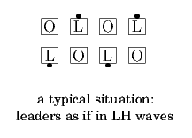 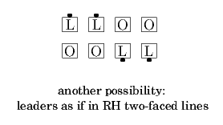
The Leaders in each Line (“L” dancers) Trade with each other as the others (“O” dancers) do the <anything> call working in a distorted 1x4. Ends in a 2x4.
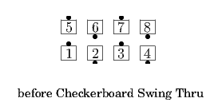
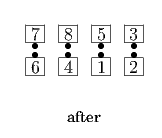
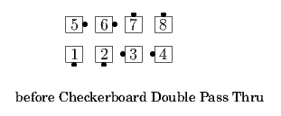
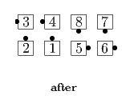
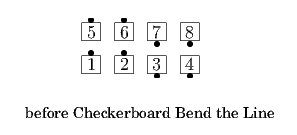
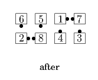
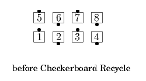
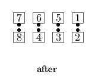
Note that although the four dancers start in a distorted 1x4, the result of the <anything> call may be some other four-person formation, such as a 2x2 or a Diamond, but they still end in the same four spots (e.g., as a distorted 2x2).
The Leaders in each Line ("L" dancers) Trade with each other as the others ("O" dancers) do the <anything> call working in a distorted 2x2. Ends in a 2x4.
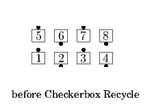
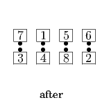
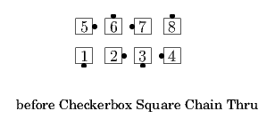
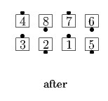
Note that although the four dancers start in a distorted 2x2, the result of the <anything> call may be some other four-person formation, such as a 1x4 or a Diamond, but they still end in the same four spots (e.g., as a distorted 1x4).
© Copyright 2004-2017 Vic Ceder and CALLERLAB Inc., The International Association of Square Dance Callers. Permission to reprint, republish, and create derivative works without royalty is hereby granted, provided this notice appears. Publication on the Internet of derivative works without royalty is hereby granted provided this notice appears. Permission to quote parts or all of this document without royalty is hereby granted, provided this notice is included. Information contained herein shall not be changed nor revised in any derivation or publication.